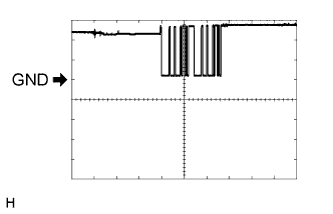

ИММОБИЛАЙЗЕР ДВИГАТЕЛЯ (для моделей с системой посадки и запуска) > КОНТАКТЫ ЭБУ |
| ПРОВЕРЬТЕ ВЫКЛЮЧАТЕЛЬ ЗАЖИГАНИЯ |
Отсоедините разъем выключателя G36.
Измерьте сопротивление в соответствии со значениями, приведенными в таблице ниже.
| Номера контактов (обозначения) | Цвет проводки | Описание контактов | Условие | Заданные условия |
| G36-8 (AGND) - масса | GR - масса | Масса | Всегда | Менее 1 Ом |
| G36-5 (GND) - масса | W-B - масса | Масса | Всегда | Менее 1 Ом |
Подсоедините разъем G36 выключателя.
Измерьте напряжение в соответствии со значениями, приведенными в таблице.
| Номера контактов (обозначения) | Цвет проводки | Описание контактов | Условие | Заданные условия |
| G36-9 (TXCT) - G36-8 (AGND) | W - GR | Выходной сигнал кода ключа | Зажигание выключено, истекло 30 с или более после открывания и закрывания двери, и педаль тормоза*1 или педаль сцепления*2 не нажата | Менее 1 В |
| G36-9 (TXCT) - G36-8 (AGND) | W - GR | Выходной сигнал кода ключа | Зажигание выключено, ключ находится вне салона, и прошло не более 30 с после нажатия выключателя зажигания | Формирование импульсов (см. осциллограмму 1) |
| G36-10 (CODE) - G36-8 (AGND) | GR - V | Демодулированный сигнал кода ключа | Зажигание выключено, истекло 30 с или более после открывания и закрывания двери, и педаль тормоза*1 или педаль сцепления*2 не нажата | Менее 1 В |
| G36-10 (CODE) - G36-8 (AGND) | GR - V | Демодулированный сигнал кода ключа | Зажигание выключено, ключ находится вблизи выключателя зажигания, и выключатель зажигания нажат*3 | Формирование импульсов (см. осциллограмму 2) |
| G36-11 (SWIL) - G36-5 (GND) | B - W-B | Сигнал подсветки | Переключатель освещения: OFF (ВЫКЛ) → TAIL | Менее 2 В → 9 - 14 В |
| G36-14 (VC5) - G36-8 (AGND) | P- GR | Источник питания | Зажигание выключено, истекло 30 с или более после открывания и закрывания двери, и педаль тормоза*1 или педаль сцепления*2 не нажата | Менее 1 В |
| G36-14 (VC5) - G36-8 (AGND) | P- GR | Источник питания | Зажигание выключено, ключ находится вне салона, и прошло не более 30 с после нажатия выключателя зажигания | Формирование импульсов (см. осциллограмму 3) |
Проверьте с помощью осциллографа.
Осциллограмма 1 (для справки)
| Позиция | Описание |
| Контакты для подключения диагностического прибора | G36-9 (TXCT) - G36-8 (AGND) |
| Настройки прибора | 2 В / дел., 20 мс/ дел. |
| Условие | Зажигание выключено, ключ находится вне салона, и прошло не более 30 с после нажатия выключателя зажигания |
Осциллограмма 2 (для справки)
| Позиция | Описание |
| Контакты для подключения диагностического прибора | G36-10 (CODE) - G36-8 (AGND) |
| Настройки прибора | 2 В / дел., 20 мс/ дел. |
| Условие | Зажигание выключено, ключ находится вблизи выключателя зажигания, и выключатель зажигания нажат* |
Осциллограмма 3 (для справки)
| Позиция | Описание |
| Контакты для подключения диагностического прибора | G36-14 (VC5) - G36-8 (AGND) |
| Настройки прибора | 2 В / дел., 20 мс/ дел. |
| Условие | Зажигание выключено, ключ находится вне салона, и прошло не более 30 с после нажатия выключателя зажигания |
| ПРОВЕРЬТЕ ЭБУ СЕРТИФИКАЦИИ |

Отсоедините разъем G38 ЭБУ.
Измерьте сопротивление и напряжение в соответствии со значениями, приведенными в таблице.
| Номера контактов (обозначения) | Цвет проводки | Описание контактов | Условие | Заданные условия |
| G38-1 (+B) - G38-15 (E) | V - W-B | +B источника питания | Всегда | 11 – 14 В |
| G38-17 (CUTB) - G38-15 (E) | L - W-B | +B источника питания | Всегда | 11 – 14 В |
| G38-16 (IG) - G38-15 (E) | W - W-B | Питание зажигания | Зажигание выключено → включено (IG) | Менее 1 В → 11-14 В |
| G38-15 (E) - масса | W-B - масса | Масса | Всегда | Менее 1 Ом |
Снова подсоедините разъем G38 ЭБУ.
Измерьте сопротивление и напряжение в соответствии со значениями, приведенными в таблице.
| Номера контактов (обозначения) | Цвет проводки | Описание контактов | Условие | Заданные условия |
| G38-2 (IND) - G38-15 (E) | G - W-B | Выходной сигнал контрольной лампы безопасности | Зажигание выключено → включено (IG) | Формирование импульсов → менее 2 В |
| G38-11 (SWIL) - G38-36 (AGND) | B - GR | Сигнал подсветки | Переключатель освещения выключен | Менее 2 В |
| G38-11 (SWIL) - G38-36 (AGND) | B - GR | Сигнал подсветки | Переключатель освещения в положении TAIL | 9–14 В |
| G38-12 (TXCT) - G38-36 (AGND) | W - GR | Выход TXCT замка зажигания | Зажигание выключено, истекло 30 с или более после открывания и закрывания двери, и педаль тормоза*1 или педаль сцепления*2 не нажата | Менее 1 В |
| G38-12 (TXCT) - G38-36 (AGND) | W - GR | Выход TXCT замка зажигания | Зажигание выключено, ключ находится вне салона, и прошло не более 30 с после нажатия выключателя зажигания | Формирование импульсов (см. осциллограмму 1) |
| G38-13 (CODE) - G38-36 (AGND) | GR - V | Вход CODE выключателя зажигания | Ключ не находится в салоне | Менее 1 В |
| G38-13 (CODE) - G38-36 (AGND) | GR - V | Вход CODE выключателя зажигания | Зажигание выключено, ключ находится вблизи выключателя зажигания, и выключатель зажигания нажат*3 | Формирование импульсов (см. осциллограмму 2) |
| G38-28 (VC5) - G38-36 (AGND) | P- GR | Питание выключателя зажигания | Зажигание выключено, истекло 30 с или более после открывания и закрывания двери, и педаль тормоза*1 или педаль сцепления*2 не нажата | Менее 1 В |
| G38-28 (VC5) - G38-36 (AGND) | P- GR | Питание выключателя зажигания | Зажигание выключено, ключ находится вне салона, и прошло не более 30 с после нажатия выключателя зажигания | Формирование импульсов (см. осциллограмму 3) |
| G38-36 (AGND) - масса | GR - масса | Масса выключателя зажигания | Всегда | Менее 1 Ом |
Проверьте с помощью осциллографа.
Осциллограмма 1 (для справки)
| Позиция | Описание |
| Контакты для подключения диагностического прибора | G38-12 (TXCT) - G38-36 (AGND) |
| Настройки прибора | 2 В / дел., 20 мс/ дел. |
| Условие | Зажигание выключено, ключ находится вне салона, и прошло не более 30 с после нажатия выключателя зажигания |
Осциллограмма 2 (для справки)
| Позиция | Описание |
| Контакты для подключения диагностического прибора | G38-13 (CODE) - G38-36 (AGND) |
| Настройки прибора | 2 В / дел., 20 мс/ дел. |
| Условие | Зажигание выключено, ключ находится вблизи выключателя зажигания, и выключатель зажигания нажат* |
Осциллограмма 3 (для справки)
| Позиция | Описание |
| Контакты для подключения диагностического прибора | G38-28 (VC5) - G38-36 (AGND) |
| Настройки прибора | 2 В / дел., 20 мс/ дел. |
| Условие | Зажигание выключено, ключ находится вне салона, и прошло не более 30 с после нажатия выключателя зажигания |
| ПРОВЕРЬТЕ БЛОК ИДЕНТИФИКАЦИОННОГО КОДА |

Отсоедините разъем G37 блока идентификационного кода.
Измерьте сопротивление и напряжение в соответствии со значениями, приведенными в таблице.
| Номера контактов (обозначения) | Цвет проводки | Описание контактов | Условие | Заданные условия |
| G37-1 (+B) - G37-8 (GND) | V - W-B | +B источника питания | Всегда | 11 – 14 В |
| G37-8 (GND) - масса | W-B - масса | Масса | Всегда | Менее 1 Ом |
Отсоедините разъем G37 блока.
Измерьте напряжение в соответствии со значениями, приведенными в таблице.
| Номера контактов (обозначения) | Цвет проводки | Описание контактов | Условие | Заданные условия |
| G37-5 (EFII) - G37-8 (GND) | SB - W-B | Входной сигнал ECM | В течение 3 секунд после запуска стартера и начала первоначального сгорания, либо в течение 3 секунд с момента первого включения зажигания (IG) после подсоединения и отсоединения аккумуляторной батареи | Формирование импульсов (см. осциллограмму 1) |
| G37-6 (EFIO) - G37-8 (GND) | W - W-B | Выходной сигнал ECM | Зажигание выключено → включено (IG) | Менее 1 В → формирование импульсов (см. осциллограмму 2) |
Проверьте с помощью осциллографа.
|  |
Осциллограмма 1 (для справки)
| Позиция | Описание |
| Контакты для подключения диагностического прибора | G37-5 (EFII) - G37-8 (GND) |
| Настройки прибора | 5 В/дел., 500 мс/ дел. |
| Условие | В течение 3 секунд после запуска стартера и начала первоначального сгорания, либо в течение 3 секунд с момента первого включения зажигания (IG) после подсоединения и отсоединения аккумуляторной батареи |
 |
Осциллограмма 2 (для справки)
| Позиция | Описание |
| Контакты для подключения диагностического прибора | G37-6 (EFIO) - G37-8 (GND) |
| Настройки прибора | 10 В/дел., 100 мс/ дел. |
| Режим | Зажигание включено (IG) |
| ПРОВЕРЬТЕ ПРИВОД БЛОКИРОВКИ РУЛЕВОГО УПРАВЛЕНИЯ (ЭБУ БЛОКИРОВКИ РУЛЕВОГО УПРАВЛЕНИЯ) |
Отсоедините разъем G35 ЭБУ.
Измерьте напряжение и сопротивление в соответствии со значениями, приведенными в таблице.
| Номера контактов (обозначения) | Цвет проводки | Описание контактов | Условие | Заданные условия |
| G35-1 (GND) - масса | W-B - масса | Масса | Всегда | Менее 1 Ом |
| G35-6 (IG2) - G35-1 (GND) | W - W-B | Вход сигнала IG2 | Зажигание выключено → включено (IG) | Менее 1 В → 11-14 В |
| G35-7 (B) - масса | G - масса | Источник питания | Всегда | 11-14 В |
| ПРОВЕРЬТЕ ЭБУ РАСПРЕДЕЛЕНИЯ ПИТАНИЯ |

Отсоедините разъем G51 ЭБУ.
Измерьте напряжение и сопротивление в соответствии со значениями, приведенными в таблице.
| Номера контактов (обозначения) | Цвет проводки | Описание контактов | Условие | Заданные условия |
| G51-1 (AM22) - масса | B - масса | Напряжение аккумуляторной батареи | Всегда | 11 – 14 В |
| G51-2 (AM21) - масса | B - масса | Напряжение аккумуляторной батареи | Всегда | 11 – 14 В |
| G51-5 (GND2) - масса | W-B - масса | Масса | Всегда | Менее 1 Ом |
| G51-6 (GND) - масса | W-B - масса | Масса | Всегда | Менее 1 Ом |
| ПРОВЕРЬТЕ ECM (для моделей с 1GR-FE) |

Измерьте напряжение в соответствии со значениями, приведенными в таблице.
| Номера контактов (обозначения) | Цвет проводки | Описание контактов | Условие | Заданные условия |
| G56-20 (IMO) - масса | SB - масса | Выходной сигнал ЭБУ электронного ключа зажигания | В течение 3 секунд после запуска стартера и начала первоначального сгорания, либо в течение 3 секунд с момента первого включения зажигания (IG) после подсоединения и отсоединения аккумуляторной батареи | Формирование импульсов (см. осциллограмму 1) |
| G56-14 (IMI) - масса | W - масса | Входной сигнал ЭБУ электронного ключа зажигания | Зажигание выключено → включено (IG) | Менее 1 В → формирование импульсов (см. осциллограмму 2) |
Проверьте с помощью осциллографа.
Осциллограмма 1 (для справки)
| Позиция | Описание |
| Контакты для подключения диагностического прибора | G56-20 (IMO) - масса |
| Настройки прибора | 5 В/дел., 500 мс/ дел. |
| Условие | В течение 3 секунд после запуска стартера и начала первоначального сгорания, либо в течение 3 секунд с момента первого включения зажигания (IG) после подсоединения и отсоединения аккумуляторной батареи |
|
Осциллограмма 2 (для справки)
| Позиция | Описание |
| Контакты для подключения диагностического прибора | G56-14 (IMI) - масса |
| Настройки прибора | 10 В/дел., 100 мс/ дел. |
| Режим | Зажигание включено (IG) |
| ПРОВЕРЬТЕ ECM (для моделей с 1KD-FTV) |
Измерьте напряжение в соответствии со значениями, приведенными в таблице.
| Номера контактов (обозначения) | Цвет проводки | Описание контактов | Условие | Заданные условия |
| G58-29 (IMO) - масса | SB - масса | Выходной сигнал ЭБУ электронного ключа зажигания | В течение 3 секунд после запуска стартера и начала первоначального сгорания, либо в течение 3 секунд с момента первого включения зажигания (IG) после подсоединения и отсоединения аккумуляторной батареи | Формирование импульсов (см. осциллограмму 1) |
| G58-28 (IMI) - масса | W - масса | Входной сигнал ЭБУ электронного ключа зажигания | Зажигание выключено → включено (IG) | Менее 1 В → формирование импульсов (см. осциллограмму 2) |
Проверьте с помощью осциллографа.
Осциллограмма 1 (для справки)
| Позиция | Описание |
| Контакты для подключения диагностического прибора | G58-29 (IMO) - масса |
| Настройки прибора | 5 В/дел., 500 мс/ дел. |
| Условие | В течение 3 секунд после запуска стартера и начала первоначального сгорания, либо в течение 3 секунд с момента первого включения зажигания (IG) после подсоединения и отсоединения аккумуляторной батареи |
|
Осциллограмма 2 (для справки)
| Позиция | Описание |
| Контакты для подключения диагностического прибора | G58-28 (IMI) - масса |
| Настройки прибора | 10 В/дел., 100 мс/ дел. |
| Режим | Зажигание включено (IG) |